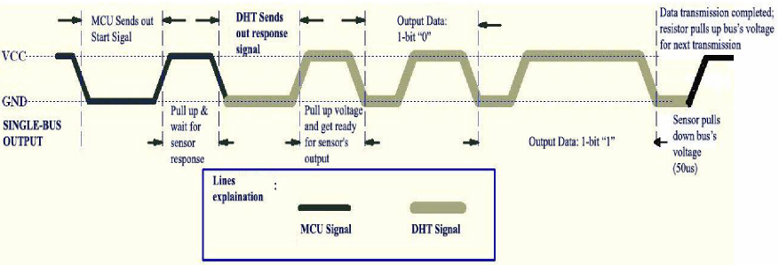
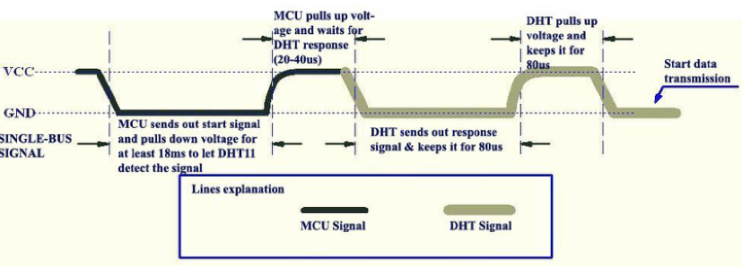
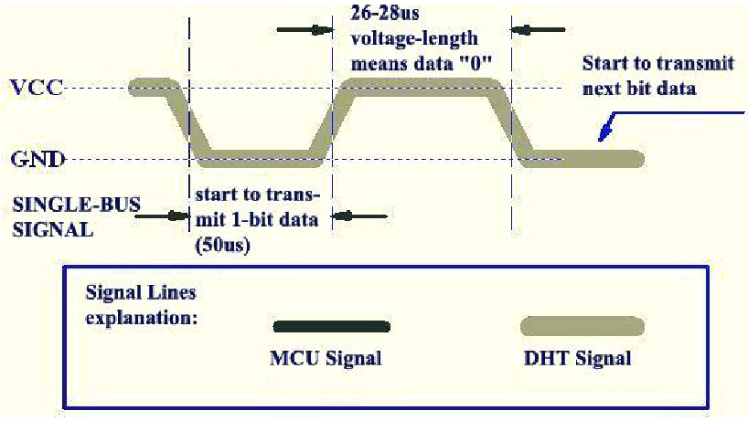

Tentang DHT11 Emulator
DHT11 Emulator adalah proyek open-source yang mensimulasikan komunikasi sensor DHT11 menggunakan Arduino Nano.
Proyek ini dibuat untuk mempelajari bagaimana sensor DHT11 berkomunikasi dengan microcontroller, termasuk start signal, response signal, timing data bit, dan transmisi data 40-bit.
Protokol DHT11
Komunikasi DHT11 menggunakan protokol digital single-wire dengan timing tertentu antara microcontroller dan sensor.

Start Signal DHT11
Microcontroller memulai komunikasi dengan memberikan start signal kepada sensor DHT11.

DHT11 Data Bit
Setelah response sensor, DHT11 mengirimkan data dalam bentuk 40-bit. Setiap bit memiliki timing HIGH yang berbeda untuk merepresentasikan nilai 0 atau 1.

Fitur DHT11 Emulator
- Emulasi sensor DHT11
- Menggunakan Arduino Nano
- Simulasi start signal
- Simulasi sensor response
- Simulasi data 40-bit
- Simulasi timing data bit
- Dokumentasi protokol DHT11
Hardware
- Arduino Nano
- Microcontroller target
- Single-wire data connection
Source Code
Source code DHT11 Emulator tersedia pada repository GitHub.
Dokumentasi
Repository ini menyediakan dokumentasi mengenai protokol komunikasi sensor DHT11 dan implementasi emulator menggunakan Arduino Nano.